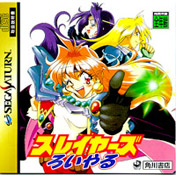

Slayers - Saturn Games
Slayers Royal

Company:
Game Arts/Kadokawa/Onion Egg
Date Released:
25 July 1997
Price (in yen):
6300
Genre:
RPG
Petition
to bring
Slayers Royal
to the US
Anime Video Game Resource Center © 1998 by
Luis A. Cruz